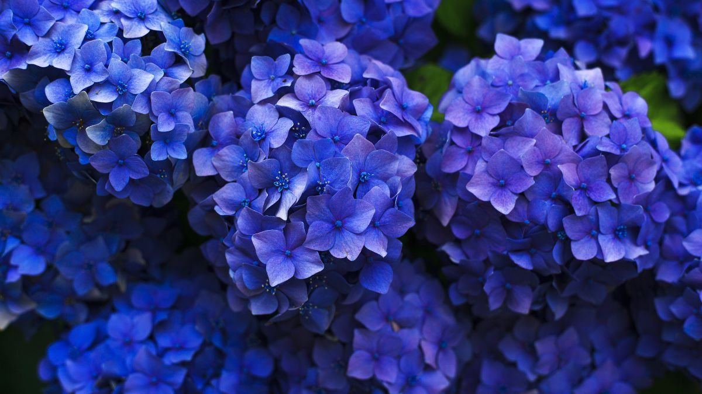
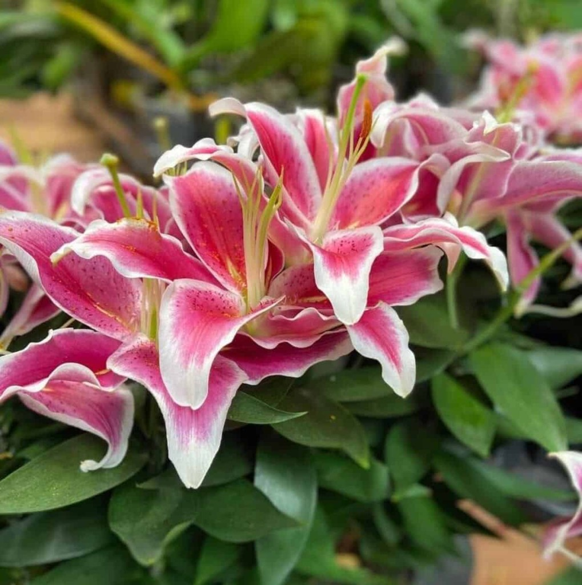

Os diferentes tipos de flores
Dentre as características das flores que promovem a atração de polinizadores, podemos citar a grande quantidade de néctar de algumas espécies e a coloração das pétalas de outras. As flores exercem um papel importante na atração de polinizadores.

Conheça a beleza da natureza
As flores são símbolo de diversas emoções elas nos ensinam muito sobre a expressão de sentimentos. Com o gesto de presentear com flores, expressamos amor, gratidão e amizade. As flores nos lembram da importância de nutrir relacionamentos, expressar emoções e cultivar conexões significativas.
A flor de lótus é uma planta aquática que floresce sobre a água e uma das curiosidades é que durante a noite as suas pétalas se fecham e a flor submerge. Com os primeiros raios de sol, a flor de lótus reaparece sobre a água e abre as suas pétalas novamente

Explore as diversidades
De modo geral, a espécie está ligada ao romantismo, pureza, inocência e amor puro. A flor lírio é repleta de magia, religiosidade e misticismo devido à sua forte relação com a fé e a devoção em diferentes religiões, sendo considerada sagrada.
